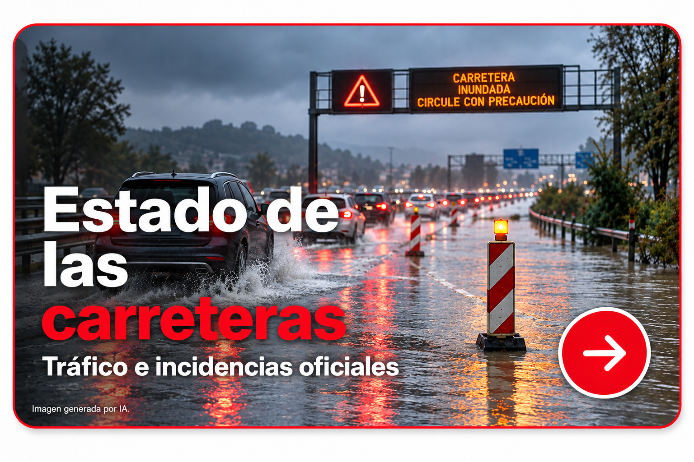

Antes de desplazarte al trabajo, consulta los avisos en las comarcas de tu trayecto y las incidencias en las carreteras.
PROTECCIÓN CIVIL · DATOS ABIERTOS DE LA GENERALITAT
Planes y comunicados oficiales
Revisa en el comunicado las zonas, horarios e instrucciones que afectan a tu desplazamiento.
Consultando la fuente oficial…
La fase de un plan no implica por sí sola una prohibición de desplazarse. Un mapa meteorológico verde tampoco confirma que hayan terminado las alertas de Protección Civil o los cortes.
SERVEI CATALÀ DE TRÀNSIT
Comprueba las vías de tu recorrido
Busca la carretera, el tramo y el sentido afectados. Comprueba la hora de la incidencia y si coincide con tu desplazamiento.
Las incidencias se consultan en Trànsit; esta pantalla no confirma si tu ruta está abierta.
FUENTE OFICIAL · METEOCAT
Previsión meteorológica por comarca
Selecciona hoy, mañana o pasado mañana y el fenómeno meteorológico para consultar las zonas con avisos.
Mapa servido por Meteocat. Comprueba la fecha mostrada y selecciona el día de tu desplazamiento.
Si el mapa no carga, abre el mapa oficial en una nueva pestaña.

Estado de las carreteras
Consulta incidencias, cortes y afectaciones antes de desplazarte.
Consultar estado de las carreteras →Conserva las evidencias de tu desplazamiento
- Guarda el comunicado oficial aplicable a tu zona y horario.
- Conserva la incidencia de tu carretera o transporte con su fuente, fecha y hora, mediante captura o impresión en PDF.
- Anota el origen, destino, horario y tramo afectado, y explica cómo impide tu desplazamiento. Comunica la situación a la empresa cuanto antes y conserva el mensaje.
Estas evidencias ayudan a documentar los hechos; no son un certificado emitido por STR ni garantizan por sí solas la justificación de una ausencia.